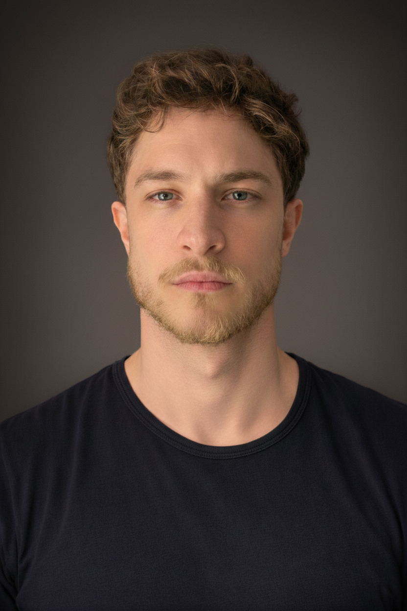

Portfolio
-
2025Ulysses IIaFor violin solo and live electronics. IRCAM. Première: Eleonora Sofia Podestà — Liepāja Theatre, Latvia.View →
-
2024Al-QantarahCommission by Icarus Ensemble. Première: Civic Ethnographic and Diocesan Museum "Giovanni Podenzana", La Spezia.View →
-
2024Modules for an OperaFor saxophone and piano. Première: Real Academia de Bellas Artes de San Fernando, Madrid — David Náñez (tenor saxophone) and Kayoko Morimoto (piano).View →
-
2023ApparuitFor two saxophones and piano. Première: Willa Lentza, Szczecin — Giuseppe Bruno (piano).View →
-
2022Lu Re d'AmuriFor clarinet and saxophone. Première: Conservatorio "A. Scarlatti", Palermo — Mario Romeo and Emanuele Anzalone.View →
-
2021Variazioni su un tema di BelliniFor guitar. Première: Davide Sciacca — Royal Northern College of Music, Manchester.View →
-
2019AlchimiaeMultimedia work for string orchestra. Commission: Lu.C.C.A. – Lucca Center of Contemporary Art, Lucca.View →
-
2018A Lover's TaleFor violin and guitar. Première: Convitto delle Arti, Noto — Davide Sciacca and Maria Natalia Ruscica (Ten Strings Duo).View →
-
2026Artistic Research, Higher Education and Technological Innovation in OperaCasa Italiana Zerilli-Marimò, New York University. International symposium examining the intersections of artistic research, conservatory education, and emerging technologies in contemporary opera production and performance.View →
-
2025New Technologies Applied to Music Teaching and PerformanceInternational Day of Artistic Research, Conservatorio "G. Puccini", La Spezia. A research presentation within the doctoral programme in Artistic Research on Musical Heritage, addressing immersive technologies, AI, and their applications to musical practice and pedagogy. With Eleonora Sofia Podestà.View →
-
2025Ulysses 2: Hybrid Composition for Violin and Responsive AI SystemsIRCAM Forum Workshops Hors-les-Murs, Rīga–Liepāja, Latvia. A presentation of a collaborative work integrating Somax2 real-time generative AI with live violin improvisation, exploring co-creative human-machine interaction within a structured formal framework. With Eleonora Sofia Podestà.View →
-
2020Dalla didattica alla composizione: i palazzi della memoria in musicaFestival Amfiteatrof, Levanto. An exploration of the method of loci as a pedagogical and compositional tool, tracing its classical origins and its application to music learning and creative practice.View →
-
2018Mario Castelnuovo-Tedesco: Capriccio Diabolico e TarantellaCastello Ursino, Catania. A philological and stylistic analysis of the dispute between composer and editor, with a focus on compositional choices and their implications for contemporary guitar writing.View →
-
2025 –Opera VRLead Designer and 3D Modeler for an immersive virtual reality environment for opera education. The spatial architecture of the platform is grounded in the method of loci, translating key dramatic and musical elements into explorable symbolic objects and environments. Within the project, Cipollina also serves as instructor of the method of loci technique.View →
-
2019 – 2024Guitar Teacher — Public Secondary SchoolsClassical guitar teacher in state secondary schools (La Spezia).
-
2016 – 2023Guitar & Music Theory Instructor — Private AcademiesClassical and electric guitar, solfège and harmony at Officine Sonore, Caltanissetta (2016–2018) and Accademia Bianchi, Sarzana (2023).
-
2025Ulysses IIa: Structured Contingency and Intersubjectivity in Composition with Co-generative SystemsPaper. SPAMEC — Conservatorio "San Pietro a Majella", Naples.View →
-
2020Guitar Writing Applied: Modern Orchestration Systems in Symphonic and Chamber ContextsBook. Published in Italian (2019) and English (2020). ISBN 9781869173259View →
-
2018Mario Castelnuovo-Tedesco: "Capriccio Diabolico" and "Tarantella" within the Problem of the Philological Analysis of the Editions for Execution PurposesBook. Published in Italian (2018) and English (2019). ISBN 9781795175296View →
-
2025Master's Degree in CompositionConservatorio "G. Puccini", La Spezia
-
2024Studies in Conducting and Musical PhenomenologyAssociazione Celibidache
-
2024Master in CLIL TeachingeCampus
-
2021Teaching Qualification AB56 — Classical GuitarMinistry of Education, Italy
-
2021English Language Certification C2AELS
-
2020Master in Music Applied to ImagesConservatory "L. Boccherini", Lucca
-
2019Master's Degree in Classical GuitarConservatory "V. Bellini", Caltanissetta
Research & Practice
Roberto Maria Cipollina is a composer, guitarist, and researcher whose work sits at the intersection of composition, immersive technologies, and acoustic heritage. He is currently a PhD student in the joint doctoral programme in Artistic Research on Musical Heritage at Conservatory "A. Steffani" of Castelfranco Veneto and Conservatory "G. Puccini" of La Spezia, within the curriculum in Immersive Technologies Applied to Music.
His doctoral research, Prometeo. Tragedia dell'ascolto, focuses on the digital reconstruction of the wooden ark designed by Renzo Piano for Luigi Nono's 1984 work — a spatial instrument conceived as a necessary acoustic condition of the composition, dismantled in 1985 and never rebuilt. Through acoustic simulation, impulse response measurement at the church of San Lorenzo, and a navigable VR environment, the research documents for the first time the acoustic phenomena produced by the ark — absent from all subsequent performances.
In parallel, Cipollina pursues an independent line of research into composition with co-generative AI systems, developed through his work with Somax 2 at IRCAM. This research interrogates the relationship between authorial intention and machine agency, proposing the categories of structured contingency and intersubjectivity as frameworks for understanding human–AI co-creative interaction in musical performance.
His compositions have been performed across Europe and North America, and his work has been presented at international venues including IRCAM, the Royal Northern College of Music, and New York University.
Contacts

PhD Student
Department of Immersive Technologies Applied to Music
Conservatory "A. Steffani" of Castelfranco Veneto
Conservatory "G. Puccini" of La Spezia
La Spezia, Italy